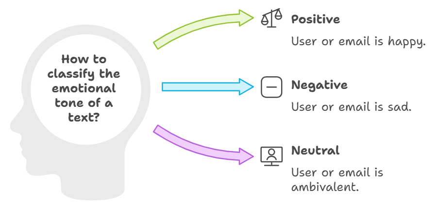
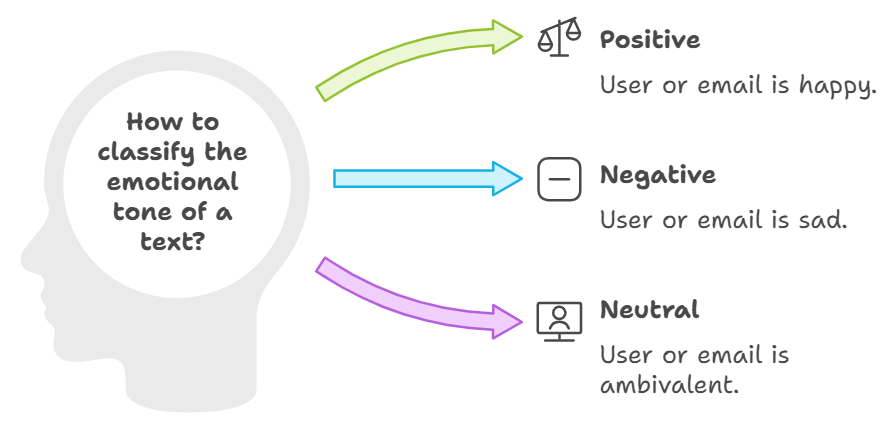

Hugging Face is a leading open-source platform that focuses on Natural Language Processing (NLP) and Machine Learning (ML), offering a vast collection of pre-trained transformer models like BERT, GPT, and T5. It simplifies the development, fine-tuning, and deployment of these models, making cutting-edge AI accessible to developers and researchers. Hugging Face also fosters an active community where users can share models and contribute to the ecosystem. Beyond NLP, it is expanding into other domains like computer vision and audio processing. Hugging Face is widely recognized for democratizing AI technology, promoting both collaboration and innovation.
The primary purpose of Hugging Face Transformers is to provide an open-source library that simplifies the development and deployment of state-of-the-art Natural Language Processing (NLP) models, specifically those built on transformer architectures like BERT, GPT, T5, and others. Hugging Face allows researchers and developers to use pre-trained models easily, fine-tune them for specific tasks, and deploy them for various NLP applications such as text classification, translation, question answering, text generation, and more.
Hugging Face aims to make cutting-edge NLP technology more accessible to a broader audience, including non-experts in machine learning. The library abstracts much of the complexity behind building and training transformer models, allowing developers to integrate these models into their applications with minimal effort.
Pre-Trained Models for Efficiency:
Hugging Face provides a vast collection of pre-trained models that can be fine-tuned for various tasks without the need to start from scratch. This saves computational resources and time, making NLP development more efficient and practical, even for those without extensive resources.
Community-Driven and Open-Source:
One of Hugging Face’s key goals is to foster an open-source community where developers and researchers can share models, contribute to improvements, and collaborate. This encourages continuous innovation and the democratization of powerful NLP tools, helping advance the field faster.
Flexibility Across Domains:
Overall, Hugging Face Transformers has become a leading platform for those seeking to integrate transformer-based models into their workflows with ease, promoting faster development and deployment of AI models in real-world applications.
Here’s a brief overview of the purpose and goals of Hugging Face Transformer examples:
Zero-Shot Classification: The goal of zero-shot classification is to allow a model to classify text into predefined categories without any prior training on those categories. This is particularly useful in scenarios where labeled data is unavailable or costly to obtain, enabling rapid and flexible classification across various domains.
Sentiment Analysis: Sentiment analysis models aim to determine the emotional tone behind a piece of text, such as whether a review is positive, negative, or neutral. Hugging Face provides pre-trained models that can easily be fine-tuned or applied to tasks where understanding public opinion or customer feedback is essential.
Generative Text: Generative text models, like GPT, are designed to create human-like text based on a given input. These models can generate stories, complete sentences, answer questions, or even write code, making them useful for creative applications, automated content generation, and conversational agents.
Each of these examples leverages Hugging Face’s transformer models to address specific NLP tasks, enhancing productivity and reducing the need for large amounts of labeled data or complex training processes.
The goal of this solution is to Jump Start your development and have you up and running in 30 minutes.
To get started with the Hugging Face Transformers solution repository, follow these steps: 1. Clone the repository to your local machine. 2. Install the required dependencies listed at the top of the notebook. 3. Explore the example code provided in the repository and experiment. 4. Run the notebook and make it your own - EASY !
These features are designed to provide everything you need for Hugging Face Transformers
